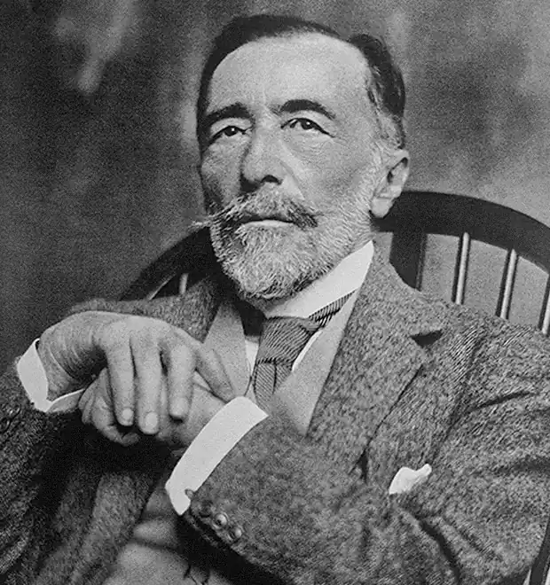
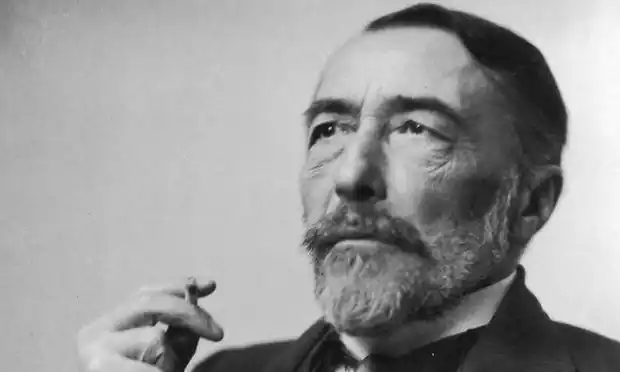
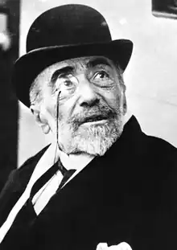

КОНРАД, Джозеф (Conrad, Joseph; автонім: Коженьовський, Юзеф Теодор Конрад — 03.12.1857, Бердичів, Україна — 03.08.1924, Бішопсборн, Англія) — англійський письменник.
Народився в сім'ї польського аристократа Аполлона Коженьовського, поета-романтика, послідовника А. Міцкевича. Перше уявлення про англійську літературу Конрад отримав у дитинстві за батьківськими перекладами п'єс В. Шекспіра. Суперечливе ставлення до Росії сформувалось у нього, коли їхня сім'я через участь батька в національно-визвольному русі зазнала адміністративного виселення у Вологду в 1863 р. Після смерті батьків хлопчика виховував його дядько — Тадеуш Бобровський, якому пізніше Конрад присвятить свій перший роман "Олмейрова примха" ("Almayer's Folly", 1895). У 1874 p. юнак несподівано покинув краківську гімназію і поїхав у Марсель, де найнявся моряком. У 1878 p. Конрад спробував накласти на себе руки. Переживши важку душевну кризу, пов'язану з рядом особистих і соціальних проблем (біль за зневажену Польщу, бажання самоутвердитись і непевність життєвих перспектив), Конрад перейшов служити в англійський флот, де за 14 років пройшов шлях від простого моряка до помічника капітана, чудово засвоїв англійську мову (особливо морський сленг та літературну мову). Рукопис його першого роману "Олмейрова примха" схвалив у 1893 р. Д. ґолсуорсі, що спонукало Конрада залишити морську службу та стати письменником. Він оселився в Англії, у графстві Кент, де й проживав із дружиною та двома синами до кінця життя, лише один раз, у 1914 p., здійснивши поїздку у Польщу. Він підтримував дружні стосунки з Г. Джеймсом та Г. Веллсом, видавцем Ед. Гарнеттом, якийсь час писав спільно з Ф. Медоксом Фордом, переклав з польської англійською п'єсу Б. Вінавера "Книга Йова" ("The Book of Job").
Творчість Конрада — одне з найцікавіших і по-своєму загадкових явищ світової літератури, коли класиком однієї національної літератури стає представник іншої національності, вихований у цілком інших національно-культурних традиціях. Парадоксальність спадщини Конрада в тому, що вона, по-перше, наділена нерозв'язною внутрішньою суперечністю (потяг до героїчного самоутвердження особистості та мотив приреченості людини на поразку), а по-друге, ця спадщина ніби балансує на межі між популярністю в масового читача (що спадає з другої половини XX ст.) й езотеричністю (Конрад дедалі більше перетворюється у "письменника для дослідників"). До цього хисткого становища додається й національна двозначність митця: окремі польські співвітчизники (приміром, Е. Ожешко) дорікали йому за "зраду" польської культури, а деякі англійці (критик В. Л. Кортні, письменниця В. Вулф) відмовляли йому в статусі видатного письменника саме через його "польськість", хоча Ф.Р. Лівіс все-таки відніс його до "класичної" традиції англійської літератури. Конрад болісно переживав своє "аутсайдерство" в житті та літературі, яке далося взнаки як у його світогляді загалом, так і в його політичних поглядах. Він стверджував, що поляки "за своєю суттю не є слов'янами, вони — представники Заходу" ("Замітка з польської проблеми", 1916). Конрад негативно оцінював (за винятком І. Тургенева) досвід російської літератури, не покладав надій ні на революцію, ні на християнство. Уже підсумовуючи прожите, письменник у листі до Б. Рассела (23.10.1922) зауважив: "єдиним порятунком" для людей "була би переміна у наших серцях, але якщо глянути на людську історію за останні 2000 років, то немає особливих підстав сподіватися на таку переміну". Уже в перших своїх романах, повістях та оповіданнях, створених у 90-х pp. XIX ст., Конрад, оспівуючи героїку морського життя, сповненого екзотики, важкої праці, смертельної небезпеки, песимістично оцінює життя загалом як якесь безцільне та позбавлене сенсу явище. Головний герой роману "Олмейрова примха" живе так, ніби "будь-яка пристрасть, жаль, горе, надія на гнів — все полишило його, вирване рукою долі". У муках помирає Віллемс, персонаж повісті "Вигнанець островів" ("An Outcast of the Islands", 1895). У романі "Негр із "Нарциса" ("The Nigger of "Narcissus", 1897) "ніґґер" Джеймс Вейт, котрий під час бурі прикидається мертвим, аби уникнути безглуздої, на його думку, праці, приречений на реальну смерть. У цій книзі Конрад уперше почав експериментувати зі стилем, зі зміною точок зору оповідача, підхоплюючи традицію, яку в англійській літературі XIX ст. плідно розробляв В. Теккерей. Одночасно з цими "морськими" творами Конрад працював над повістю "Сестри" ("The Sisters", 1895), де звучить туга письменника за рідними місцями та виражене несприиняття Заходу з його "хаосом і дріб'язковістю, що приховуються за грандіозною видимістю". У повістях "Юність" ("Youth", 1902) і "Тайфун" ("Typhoon", 1903) звучать рідкісні для Конрада оптимістичні мотиви, ледь відтінені, втім, авторською поблажливою іронією. Старий моряк Марло, котрий виступає оповідачем у кількох творах письменника, згадує свою першу морську пригоду, яка тепер, на схилі віку, видається йому символічним втіленням юності з її "силою", вірою, фантазією та "дурною, чарівливою" романтикою ("Юність"). В образі чесного та "позбавленого уяви" капітана Мак-Віра показано людину, яка завдяки винятковій досвідченості та добросовісності зуміла врятувати корабель від неминучої загибелі під час страшної бурі ("Тайфун"). Розквіт творчості Конрада припав на перші два десятиліття XX ст., коли він створив повість "Серце пітьми" ("The Heart of Darkness", 1900), романи "Лорд Джім" ("Lord Jim", 1900), "Ностромо" ("Nostromo" ,1904), "Таємний агент" ("The Secret Agent", 1907), "Очима Заходу" ("Under Western Eyes", 1911), "Випадок" ("The Chance", 1913), "Тіньова риска"("The Shadow Line", 1917) та ін., а також збірки оповідань "Поміж сушею та морем" ("Twixt Land and Sea Tales", 1912), "Припливи та відпливи" ("Within the Tides", 1915) тощо. У цей час розширюється діапазон творів письменника — окрім морської тематики, він береться за соціально-політичні проблеми, пише про революційний рух, хоча, по суті, говорить про одне — про душу людини, що вступає у фатальну гру-сутичку з Долею. Лорд (пан, туан) Джім — найкращий образ письменника. У цьому персонажі гротескно поєднані сила, міць, талант, шляхетність, романтична велич "надлюдини" і тендітність, слабкість. На думку оповідача Марлоу, сам Джім не знає, "яку він веде гру", якщо він взагалі вів її, бо "жодна людина не може до кінця збагнути власні хитрощі, до яких вдається, аби врятуватися від грізної тіні самопізнання". І в цій "грі", до якої підштовхує людину уява і яку Конрад згодом порівняв зі спогляданням хистких тіней у платонівській печері, виграшу бути не може. Випереджаючи літературу екзистенціалізму, Конрад веде своїх персонажів до загибелі — або добровільної, або вимушеної, причому якраз перед обличчям смерті їм судилося хоча б частково збагнути сенс свого існування. Але, на відміну, скажімо, від героїв Ж.П. Сартра, вони не заперечують світ — море, природа зостаються для них великим "дзеркалом душі", художнім аналогом їхньої власної внутрішньої боротьби. У романі "Ностромо" народний ватажок Джан Баттіста на прізвисько "Ностромо" — "наша людина" (а лорд Джім, як підкреслено письменником, був "одним із нас") — виявляється лише пішаком у буйному хаосі сил природи й історії. Джіма губить фатальна випадковість — інстинктивний стрибок у шлюпку з корабля, якому загрожувала небезпека. Із Ностромо майже аналогічна ситуація — хоча за цілком інших конкретних обставин: опинившись у двозначній ситуації, він, шматований муками ображеного марнославства, зважується на безчесний вчинок і гине. До політики загалом і до революційного руху зокрема Конрад ставився негативно. Як каже оповідач у романі "Очима Заходу", в реальній революції влада потрапляє до рук вузьколобих фанатиків і лицемірних тиранів, а чесні вожді стають жертвами, "їхні сподівання потворно зраджуються, їх ідеали окарикатурюються". У "Таємному агенті" революціонери-терористи показані як жертви дикого фанатизму та кати, котрі не зупиняються ні перед чим у своїй руйнівній діяльності (образи агента Верлока, Міхаеліса, Юнта, "товариша" Озіпоната "смертоносного, як чума" професора-терориста). Книга "Очима Заходу" сприймається англо-американською критикою як варіації Конрада на мотиви романів нелюбого ним Ф. Достоєвського "Злочин і кара" та "Біси". Англійський письменник зобразив російського терориста Віктора Халдіна, котрий убив царського міністра; студента Кирила Разумова, який видає Халдіна владі, а потім закохується в сестру своєї жертви. Муки совісті змушують Кирила зізнатися в усьому революціонерам, після чого він накладає на себе руки. Із книг, створених Конрадом спільно з Ф. Медоксом Фордом, можна відзначити їхній перший роман "Спадкоємці" ("The Inheritors", 1900), у якому спародійовано тогочасні політичні романи та ранні утопії Г.Веллса. Останні твори письменника позначені ознаками занепаду його таланту, та й сам Конрад у листах визнавав, що він вже "видихнувся", що працювати йому стає дедалі важче. Такими є його романи "Золота стріла" ("The Arrow of Gold", 1919), "Порятунок" ("The Ruscue", 1919), "Морський блукалець" ("The Rover", 1922). Залишився незакінченим роман "Напруга" ("Suspense", 1924), у якому автор мав намір, вочевидь, зобразити тріумфальне повернення Наполеона з о. Ельба у Францію у березні 1815 р. Конрад був також публіцистом, критиком, він залишив статті про А. Доде, Г. де Мопассана, Ф. Голсуорсі, передмови до своїх творів, близько чотирьох тисяч листів.В оповіданнях К "Емі Фостер" (1903) і "Князь Роман" (1925), повісті "Дві сестри" (1896, незак.; вид. 1928), книзі "Зі спогадів" (1912) змальовано природу України, зображено побут українців і місця, пов'язані з юнацькими роками письменника (Чернігів, Житомирщина, Гуцульщина, Бердичів, Київ).